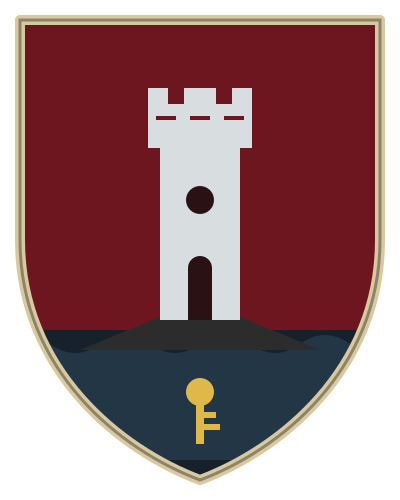
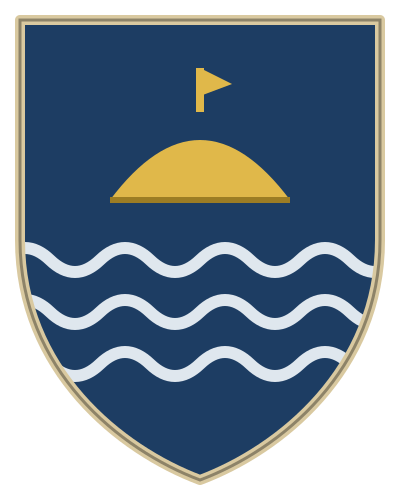
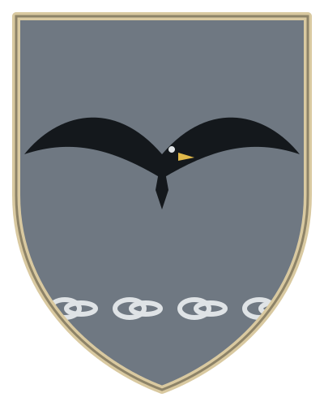
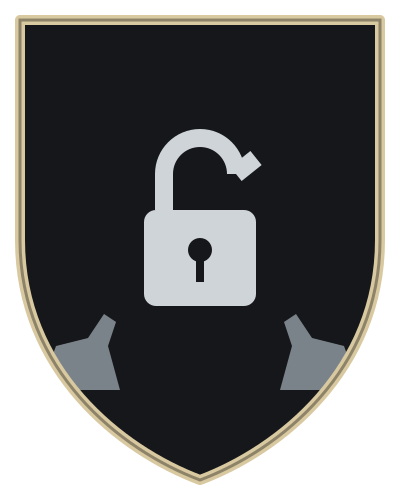
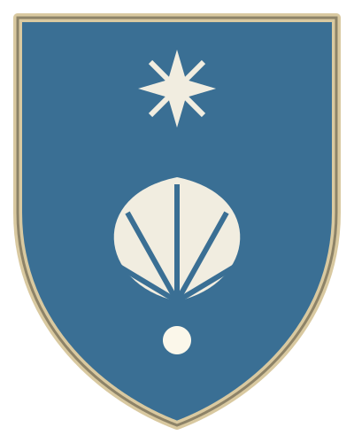
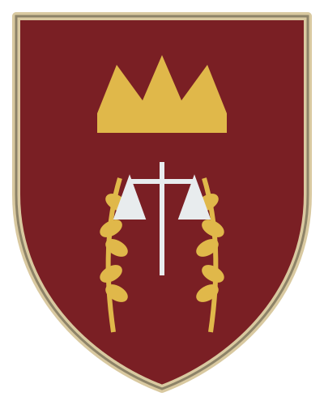
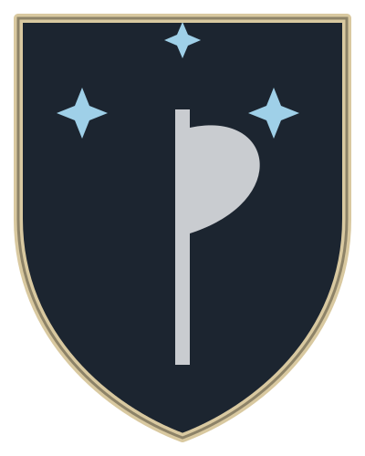
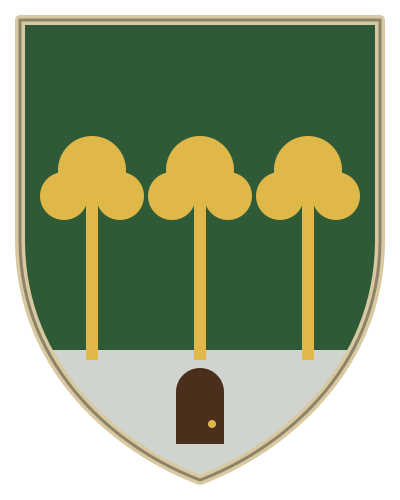
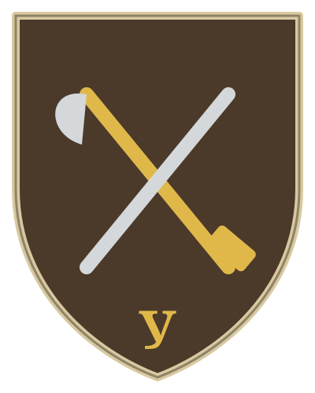

Девизы и описания — предложение, не канон, пока автор не сказал «да».

Багровое поле; серебряная башня на мысу над чёрными волнами; золотой ключ в дверях.

Синее поле; золотая рыбацкая лодка килем вверх над тремя серебряными волнами.

Серое поле; чёрная чайка с раскинутыми крыльями; под ней серебряная цепь. Один образ — и свобода, и неволя.

Чёрное поле; серебряный замок с разомкнутой дужкой; по сторонам две серые собаки.

Лазурное поле; серебряная раковина над жемчужиной; сверху звезда с восемью лучами.

Червлёное поле; золотая корона над двумя золотыми колосьями; серебряные весы — знак королевского суда.

Чёрное поле; серебряный топор с лезвием вниз между тремя льдистыми звёздами.

Зелёное поле; три золотых ясеня на серебряной земле; в основании — дверь.

Серо-коричневое поле; золотой топор и рубанок накрест; ниже — простое «У». Знак не герб, а клеймо мастера: ставится на мебели и лодочных досках.